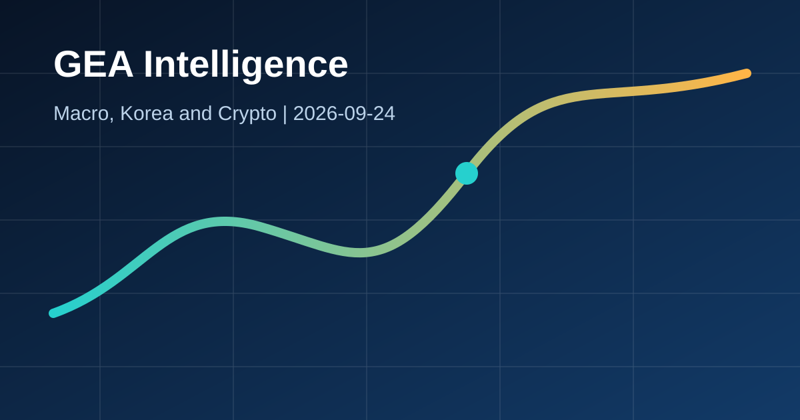

Daily Economy Briefing
미 국채 수익률 19년 고점과 일본 금리 적용, 24시간 원화 결제의 의미

30초 요약
- 미국 10년물 국채금리가 5%를 다시 넘고 주식시장이 하락했습니다. 고유가와 추가 금리 인상 우려가 할인율을 끌어올리는 경로입니다.
- 일본은행이 정한 1.25% 정책금리가 오늘부터 적용됩니다. 엔화 조달비용과 글로벌 채권·캐리 자금의 변화를 함께 봐야 합니다.
- 한국은행은 4개 은행과 24시간 원화 국제결제망 시범운영을 시작했습니다. 외국인 원화 결제 접근성 개선은 중장기적으로 외환시장 구조에 영향을 줄 수 있습니다.
왜 지금 중요한가?
정책금리 결정 이후 실제 시장금리가 어떻게 움직이는지가 자산가격을 좌우합니다. 미국 장기금리 상승과 일본의 통화정책 정상화가 동시에 진행되면 달러, 엔화, 원화와 글로벌 유동성의 방향이 빠르게 바뀔 수 있습니다.
글로벌 이슈 1: 미 국채 수익률 19년 고점와 위험자산 조정
사실: 9월 23일 미국 10년물 국채금리는 장중 5%를 다시 넘었고 다우지수는 300포인트 이상, 나스닥은 1% 하락했습니다. 연준은 9월 16일 기준금리를 3.75~4.00%로 인상하며 물가가 여전히 높다고 평가했습니다.
영향: 장기금리 상승은 성장주와 암호화폐의 할인율을 높이고 기업의 채권 조달비용을 키웁니다. 달러 강세가 동반되면 원화 환산 수입비용과 신흥국 자금흐름에도 부담입니다.
글로벌 이슈 2: 일본은행 1.25% 금리, 오늘부터 적용
사실: 일본은행은 7대2로 익일물 콜금리 유도목표를 1.25%로 높였고 새 지침은 9월 24일부터 효력이 발생합니다. 일본은행은 원유, 엔화, AI 수요가 물가에 미치는 영향을 점검하며 추가 인상 가능성을 열어뒀습니다.
영향: 엔화 조달비용이 높아지면 엔 캐리 거래의 기대수익이 낮아지고 일본 자금의 해외채권 배분도 달라질 수 있습니다. 미국과 일본 금리가 함께 오르면 글로벌 채권시장의 변동성이 커질 수 있습니다.
한국 이슈: 24시간 원화 국제결제망 시범운영
사실: 한국은행은 9월 21일 국민·우리·하나·신한은행과 원화 국제결제망 시범운영을 시작했습니다. 영업일 오전 9시부터 다음 날 오전 9시까지 운영하며 2027년 1월 본운영과 외국계은행 참여를 계획하고 있습니다.
해석: 해외 투자자가 자국 영업시간에 원화를 결제할 수 있어 접근성과 운영 편의가 개선됩니다. 다만 원화의 국제적 수요와 변동성에 미치는 효과는 참여기관 확대, 거래량, 외환시장 유동성을 확인해야 판단할 수 있습니다.
시장 연결 경로
미 국채 수익률 고점 상회는 장기 할인율과 기업 조달비용을 높여 주식·암호화폐의 밸류에이션을 압박합니다.
강달러는 원화 약세와 수입물가 압력으로 연결됩니다. 24시간 결제망은 접근성을 개선하지만 환율 방향을 보장하지 않습니다.
금은 지정학적 방어 수요와 높은 실질금리 부담이 충돌합니다. 브렌트유가 100달러 안팎이면 물가 경계가 쉽게 사라지기 어렵습니다.
ETF 수요는 암호화폐를 지지하지만 국채금리 급등은 기술주와 함께 위험자산 전반의 변동성을 키울 수 있습니다.
다음 확인 포인트
- 미국 2년·10년물 국채금리와 달러지수
- 일본 단기금리, 엔/달러, 일본 투자자의 해외채권 흐름
- 원화 국제결제망 거래량, 참여기관 확대, 원/달러 장중 유동성
관련 글: 오늘의 Crypto Intelligence · 원/달러 환율 영향 · 한국 수출 사이클